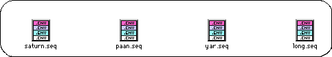
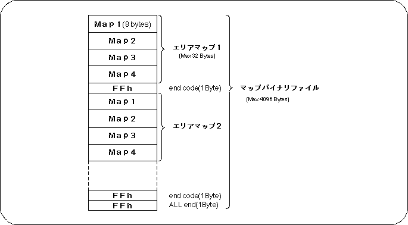
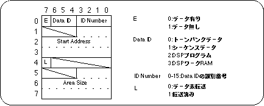
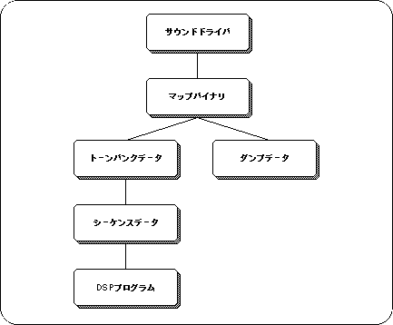
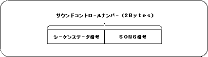

★SGL User's Manual
★データの受け渡し
★SGL User's Manual
★データの受け渡し





図2-11 PCMデータファイル例
| ファイル名 | 音 | ステレオ | ビット | ピッチ | コメント |
|---|---|---|---|---|---|
| stereo.8 | 「10年早いんだよ」 | ステレオ | 8 | 7800 | 左右ずれてあります |
| mono.16 | 「はいな」 | モノラル | 16 | 7180 | |
| stereo.16 | 「アウー」 | ステレオ | 16 | 7F00 | 右から左に声がながれます |
スクリプトファイル名 [バイナリファイル名] [配列名] ＞ [出力ファイル名]
#!/bin/csh -f echo "char$2[]={" od -hv$1|cut -s -d ""-f2-|gsed's/\(..\)\(..\)*/0x\1,0x\2,/g' echo"};"
★SGL User's Manual
★データの受け渡し